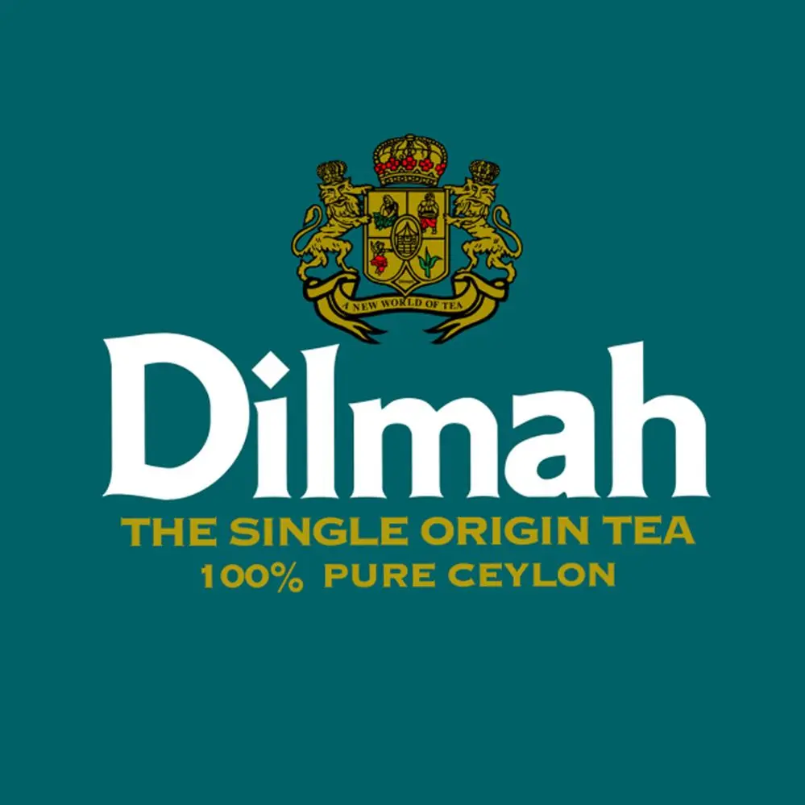
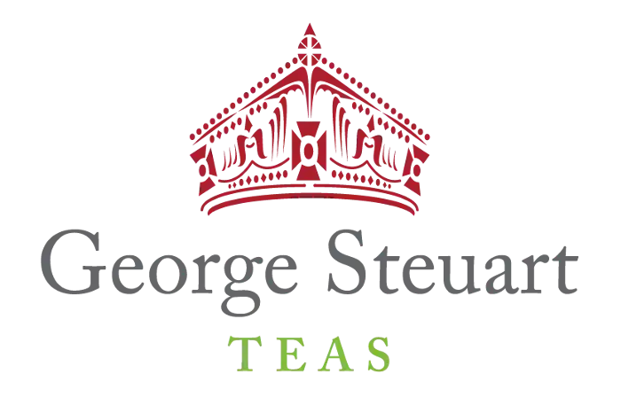

Tea Manufacturers in Sri Lanka
Ceylon's Tea Manufacturers
There are various Tea Manufacturers in Sri-Lanka and most of them export Tea to other countries as well. Tea exportation has been happening in Sri Lanka for many years and it is considered as one of the main sources of income when it comes to total export income. Since Sri Lanka has a well-known reputation for their finest Tea, some of the foreign countries prefer Sri Lankan Tea compared to the other options. There are many different tea manufacturers in Sri Lanka and a few of the well-known Manufacturers are given below Given below are some of the known Tea manufacturers worldwide:
- Dilmah
- Jones
- George Steuart
- Ceylon Tea
- Empire teas
- Malwatte
- Maliban Tea
- Dilmah Tea:

Dilmah was established in the year 1988 after the founder named the company after their sons Dilhan and Malik. Dilmah Tea was also exported to over 100 countries worldwide and is still continuing to grow their success rate. Dilmah is one of the first company to produce tea in Sri-Lanka. It a well reputed company that has been successfully operating for years.
Their head office is located at Peliyagoda, and they have their Tea Plantation in the central province of Sri Lanka. Dilmah has decided to vertically integrate their organization and thier main source of income comes from the Kahawatte Plantations where they produce 25 million kg of Tea and 2.5 million kg of rubber every year.
- George Steuart

George Steuart was established in the year 1835 by the 2 people, James Steuart and George Steuart. The orginally arrived from London to Sri Lanka when they realized that the soil in Sri Lanka had a lot of potential to produce coffee. Within the period 1800s, both the brothers mainly focused on selling coffee.
At the year of 1870 they successfully exported coffee to other parts of the world. Gradually they wanted to diversify so they decided to produce Tea as well. Following the incorporation of the company in the year 1954, the company has been successful in selling variety of Tea Types all across the world.
- Empire Teas
Empire Teas is one of the Tea exporters in Sri Lanka. On average around 14 million kg of Tea is produced and they are also exported to various countries around the world. The company has expanded their operations in various other countries like Middle East, Russia, USA and many more. In order for them to coop with the culture in other countries, Empire Teas goes under different brands; Mervin, Regalo, Hyson, etc. Apart from selling high quality tea, they also have diversified, and they produce Labels for private companies as well. Their operations are worldwide and they serve to satisfying their customers with good quality labels.